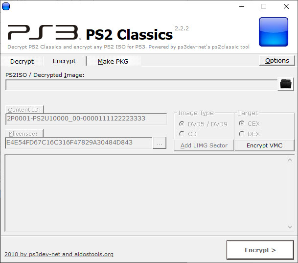
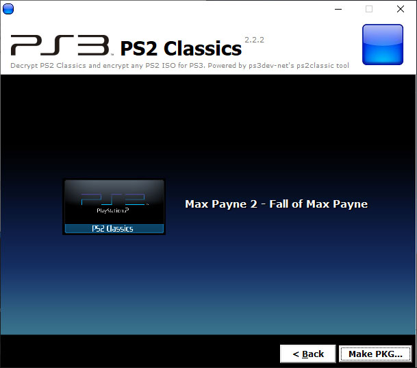
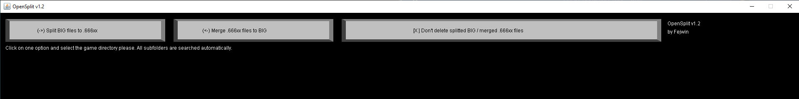

PS2 en PS3 con PC
Podemos Convertir ISO de PS2 para HEN con un PC para nuestra consola de PS3, Convierte tus juegos de playstation 2 a formato de imagen ISO, donde se te facilitara la manipulación de tu juego.
Para esta Guia
Requisitos para este tutorial
- PC o Notebook con Windows 7, 8, 8.1, 10
- Para descomprimir archivos .rar o .zip
Programas para este Tutorial
Archivos Para descargar
| Archivos | Servidores | |
|---|---|---|
| PS2 en PS3 con PC | Mega | |
| PS2 APP | Mega | |
| exdata | Mega | |
| Lista de compatibilidad del emulador de PS2 Classics | WEB Oficial | |
Para Empezar este Tutorial
- Descargamos los archivos
- Descomprimimos el archivo .rar o .zip
- Emulación de PS2 en PS3 FAT, SLIM, SUPER SLIM con HEN.rar
- Con la última versión disponible
- Una vez descargado nuestro archivo
- Lo extraemos
- Dentro del archivo .rar encontraremos las siguientes carpetas
- Herramientas: aplicaciones para nuestro pc
- Juegos PS2 ISO: juegos de PS2 en formato ISO o pkg
- PS2 Classics Launcher para PS3: Descargar desde PS2 APP para instalar en nuestra consola PS3
- Vamos a la carpeta Herramientas
- Dentro de la carpeta de
ps2classics_GUI_2.2.2(Juegos de PS2 encriptado) - Ejecutamos PS2Classics_GUI.exe (preocupación con el antivirus puede eliminar archivos del programa) 
- Buscamos nuestro juego desde el botón de carpeta negra dentro de la carpeta
Juegos PS2 ISO - Nos aseguramos que este en DVD5/DVD9 y en CEX marcado
- Y le damos a Encrypt y si nos sale una aleta de LIMG le damos a si
- Y esperamos que encripte y esperamos que salga donde guardar la imagen
- Nos sale con el nombre ISO.BIN.ENC.BIN.ENC y lo cambiamos por
ISO.BIN.ENC - Y lo guaramos en la carpeta que estamos trabajando ps2classics_GUI_2.2.2\PS2U10000\USRDIR
- Si queremos el code Le podemos colocar el nombre como por ejemplo
MaxPayne1.BIN.ENC(si queremos cambiar el nombre) - Y listo
- Dentro de la carpeta de
ps2classics_GUI_2.2.2(si queremos crear un PKG de un ISO de PS2) - Ejecutamos PS2Classics_GUI.exe (preocupación con el antivirus puede eliminar archivos del programa)
- Buscamos nuestro juego desde el botón de carpeta negra dentro de la carpeta
Juegos PS2 ISO - Nos aseguramos que este en DVD5/DVD9 y en CEX
- Y le damos a Encrypt y si nos sale una aleta de LIMG le damos a si
- Y esperamos que encripte y esperamos que salga donde guardar la imagen
- Nos sale con el nombre ISO.BIN.ENC.BIN.ENC y lo guaramos en la carpeta que estamos trabajando
ps2classics_GUI_2.2.2\PS2U10000\USRDIR - Si nos sale el nombre en ISO.BIN.ENC.BIN.ENC lo cambiamos a
ISO.BIN.ENC - Si queremos el code Le podemos colocar el nombre como por ejemplo
MaxPayne1.BIN.ENC(si queremos cambiar el nombre) - Después nos vamos a la pestaña Make PKG del programa PS2Classics_GUI.exe 
- Si queremos cambiar algo solo vamos a ps2classics_GUI_2.2.2\PS2U10000 y cambiamos estas imágenes respetando la dimensiones y formato
- ICON0.PNG
- PIC0.PNG
- Después le damos doble clip donde queramos para cambiar las imágenes
- Después de terminar le damos al botón Make PKG… y seleccionamos el archivo ISO.BIN.ENC a convertir
- Después nos sale una pestaña de CONFIG y le damos a cancelar
- Y esperamos que termine (nos sale un mensaje de Notice 2 beses)
- Podemos cerrar el programa
- Dentro de la raíz de nuestro programa ps2classics_GUI_2.2.2 estará nuestro archivo .pkg ej UP0000-SLUS20814_00-PS2CLASSICS00000.pkg
- Si queremos cambiamos el nombre ej nombre.pkg
- Copiamos los archivos creados al USB
- Copiamos los archivos nombre.pkg o MaxPayne1.BIN.ENC
- Si el archivo pesa más de 4GB
- Copiamos el archivo ej MaxPayne1.BIN.ENC a OpenSplit v1.2
- Y abrimos OpenSplit v1.2/OpenSplit v1.2.jar 
- Y le damos al bonton (->) Split BIG files to .666xx
- Automáticamente empieza a dividir en partes
- Y dentro de OpenSplit v1.2 encontraremos los archivos MaxPayne1.BIN.ENC.66600 y mas
- Y copiamos PS2 Classics Launcher para instalar (de preferencia PS2_Launcher_REBUG_Edition.pkg más el exdata para los juegos convertidos por ps2classics)
- Instalamos nuestros archivos pkg
- Para instalar el .pkg nos vamos a Administrar archivos PKG
- Seleccionamos Instalar archivos PKG/Directorio estándar (USB)
- Y instalamos los pkg de nuestra aplicación
- Una vez instalada estaríamos listo
- Para los archivos nombre.BIN.ENC.66600
- Vamos al navegador de nuestra computadora y colocamos la ip de nuestra consola
- Desde el navegador vamos a /dev_usb000/ y buscamos el archivo nombre.BIN.ENC.66600
- Y le damos a clip derecho y le damos a Copy
- Y lo pegamos en /dev_hdd0/PS2ISO/ y le damos clip derecho Paste
- Y esperamos que termine va a juntar todo y dejara en un solo archivo MaxPayne1.BIN.ENC
- Y listo
- Solo nos queda cargar el PS2 Classics Launcher para los juegos de PS2 recién pasados
- Y estaríamos listo (recomendación ajustar los ventiladores de la consola PS3 para no tener problemas)
×